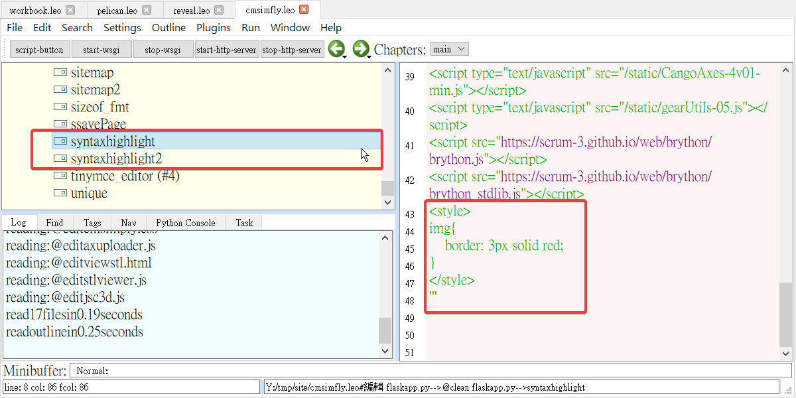

Week2
- 前往github網站更改branch，先到setting-->左邊點選Branches，將master改成gh-pages。
- 開啟cmd命令提示字元，到自己的資料夾去檢查分支-->git branch

- 使用cmd命令提示字元在自己的資輛夾中啟動wsgi.py-->python wsgi.py
- 前往瀏覽器開啟https://localhost:8443

- 登入網站login-->密碼:admin(預設)
- 開啟shareX-->
- 鍵盤按下Ctrl+Print Screen擷取畫面(範圍)
- 鍵盤按下Shift+Print Screen錄影畫面(範圍)
- 前往Leo launcher-->Open-->自己的資料夾-->cmsimfly.leo-->找到syntaxhighlight(動態)與syntaxhighlight2(靜態)-->加入下列文字來新增近端與動態的圖片紅框
<style>img {border: 3px solid red;}</style> - 使用Leo launche-->Open -->reveal.leo更改投影片內容
- 同方法使用Leo launche-->Open -->pelican.leo更改網誌內容
- 前往cmd命令提示字元-->進入自己的資料夾(site)-->使用git status來檢查是否有異常-->再用git add . 新增全部更新內容-->git commit -m "文字說明" 提交-->最後 git push 完成推送
上課影片Week1 << Previous Next >> Week3